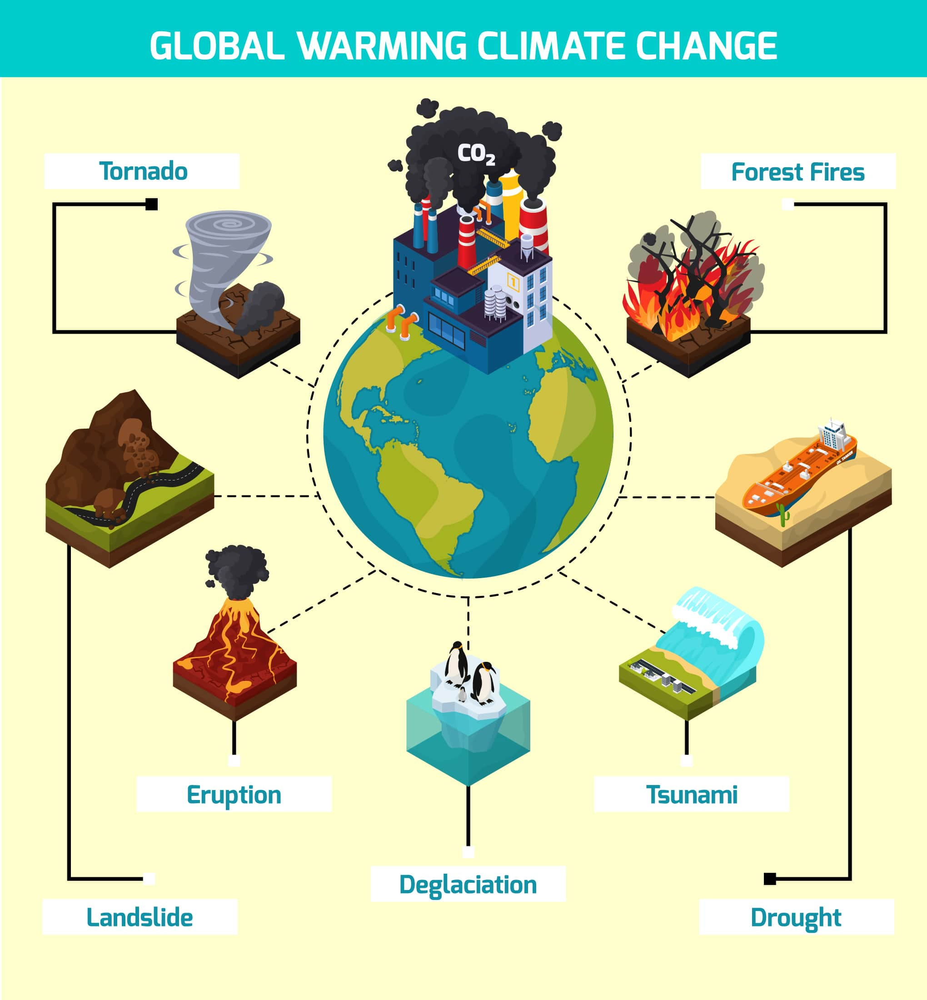

Causes of Global Warming
- Burning of Fossil Fuels: The burning of coal, oil, and natural gas for energy production is the largest source of greenhouse gas emissions.
- Deforestation: Cutting down trees reduces the number of plants that can absorb CO2 from the atmosphere.
- Industrial Processes: Manufacturing processes, including cement and chemical production, release large amounts of CO2 and other pollutants.
- Agriculture: Livestock farming produces methane, and the use of chemical fertilizers releases nitrous oxide.